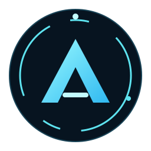

Keep windows, projects, knowledge and questions together.
Choose New window. Select Codex, Claude Code, PowerShell or Git Bash. The associated project always starts at New Project; give it a name or choose an existing project. Alpha creates its working folder automatically. Additional workspaces live inside their project.
Agent windows use the installed provider's login, model and permissions. If a provider is unavailable, install it separately and use Settings → Installed tools → Refresh.
Use the Windows toolbar for side-by-side, top/bottom, grid or tabs. Two side-by-side windows have a balance slider. Drag the viewer divider to change its width. Rearranging panes does not restart their processes.
The viewer can detach into its own window or dock back. Select a project in the sidebar to change its contents. Set a separate project viewer theme in Settings.
The Questions page collects questions from all projects and windows. Every question shows its requesting area and project. Choose a suggested response or write your own, then select Send answer. Merely choosing an option does not submit it.
Your answer is saved and delivered to the requester's inbox. Agents can check the answer using their Alpha tools and mark it resolved after applying it. Pending questions have no answer; they must never be treated as approved.
New memories are shared across Alpha by default. Choose project-specific for facts that belong to one project. Agent tools also classify clearly project-specific entries conservatively, and you can correct their scope in the editor. Skills can likewise be shared or project-specific.
Use tags and importance to organize knowledge; link related entries to draw connections. Pin governing instructions that should always be considered within their scope. Each retrieval searches shared knowledge plus the active project's records. Other projects' records are excluded before ranking.
On the Memory page, See what matters to a task shows the selected subset and why each record was chosen. Retrieval uses a local term index, title/tag weighting and importance. Token counts are estimates. Oversized pinned instructions are reported instead of silently ignored.
In agent windows, the task composer prepares a prompt with relevant
memory. Review it in the terminal and press Enter there to submit. Agents
can also retrieve context on demand through alpha_recall.
Typing directly into a provider terminal uses that provider's normal
behavior.
Drag to orbit, scroll to zoom, and click a node to inspect its source and scope. Shared and project nodes use different colors. Solid connections are saved relationships; dotted connections show membership in the memory system. The center represents the workspace controller, not a knowledge record. The graph updates when records change.
Use Messages to send a note to a window inbox. Agents have tools for listing peer windows, sending messages and reading their inboxes. Agent-to-agent messages stay within the same project. Human-directed messages can target any window.
Messages are delivered to inboxes, never executed as shell commands. Agents check inboxes using their tools; Alpha does not force a message into a running terminal or automatically start paid model turns.
Choose Alpha, Smurfs or Rena / Higurashi. Their main controller identities are Alpha, Papa Smurf and Rena. Edit the application name, controller name, main colors and icon/image in Themes. Save and apply, or restore a preset. Theme changes leave underlying projects and knowledge intact.
The Files viewer reads local project content, including text, HTML, JSON, images and common media. HTML previews are sandboxed and have no desktop control API. Project-relative assets are supported; preview pages cannot fetch remote services. Text previews are limited to 2 MB and media previews to 50 MB.
Projects and workspaces, knowledge, questions and terminal history remain in Alpha's local application data folder. Stopped windows retain terminal history; their running processes do not survive quitting. Use Reopen to keep the same Alpha inbox and question identity. For Codex and Claude Code, Reopen / resume opens the provider-native conversation picker; choose the conversation to continue. Shell windows start a fresh shell in the same workspace.
This release provides the new project, window, memory, questions and theme workflows. It does not automatically import an existing workspace, add voice services, or include Phone Access. Retrieval is local ranked search rather than semantic embeddings. Signed distribution and automatic updates can be added in a later release.